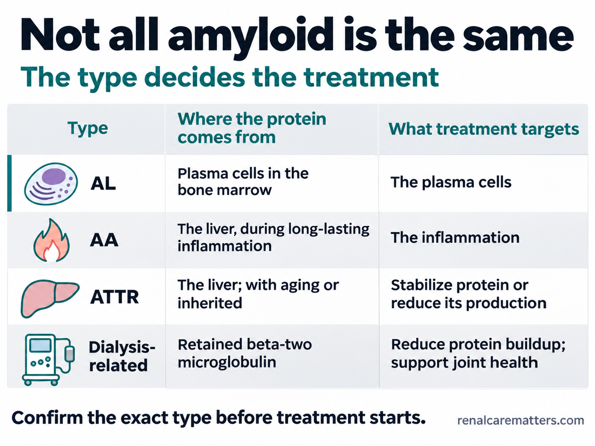
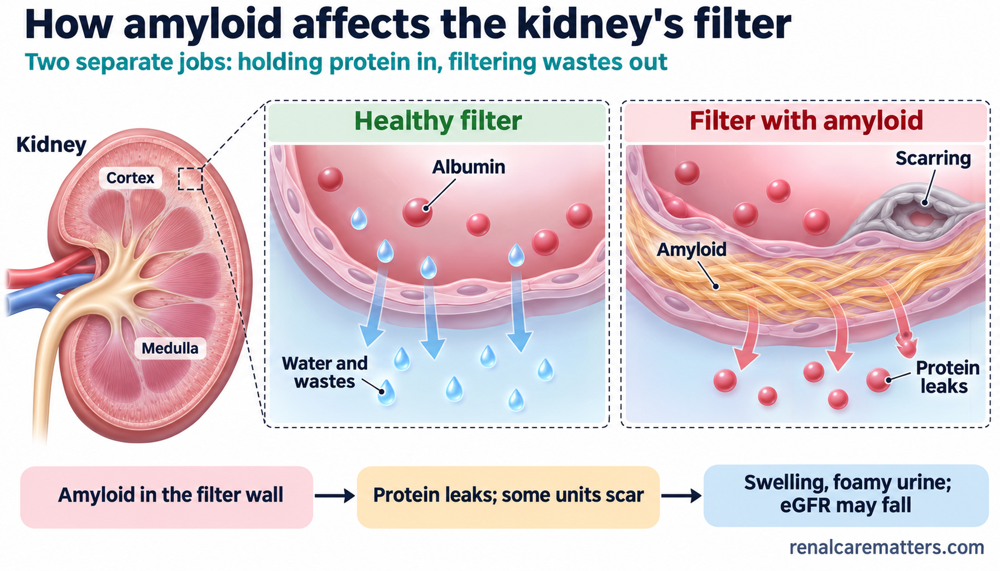
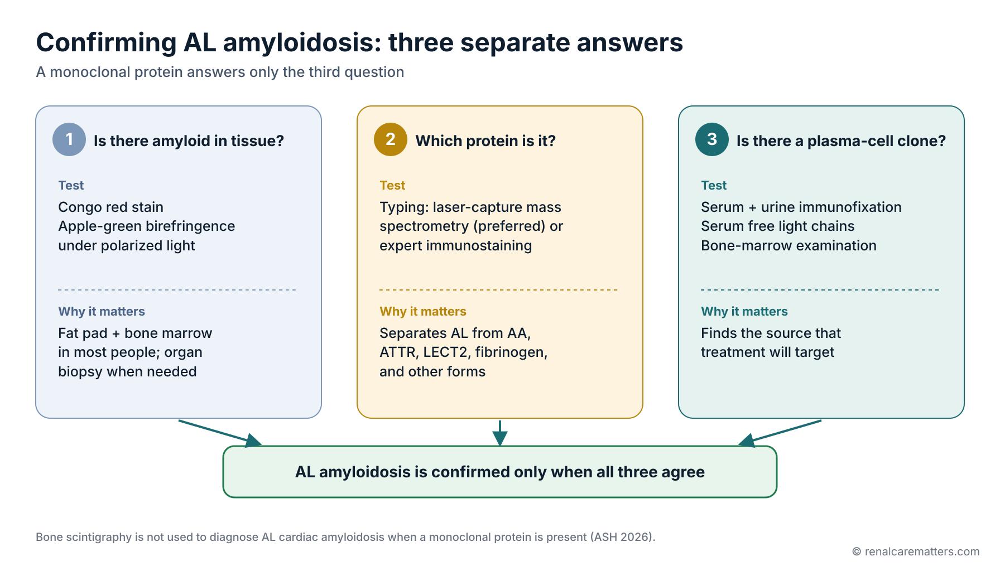
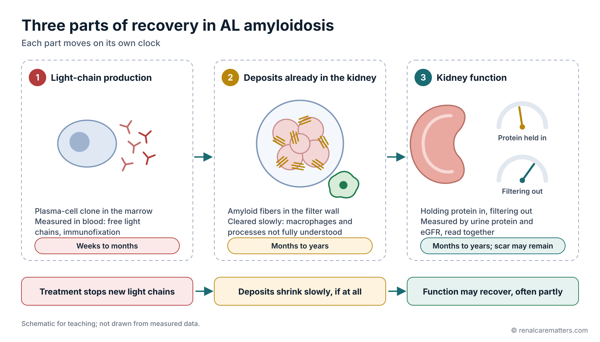
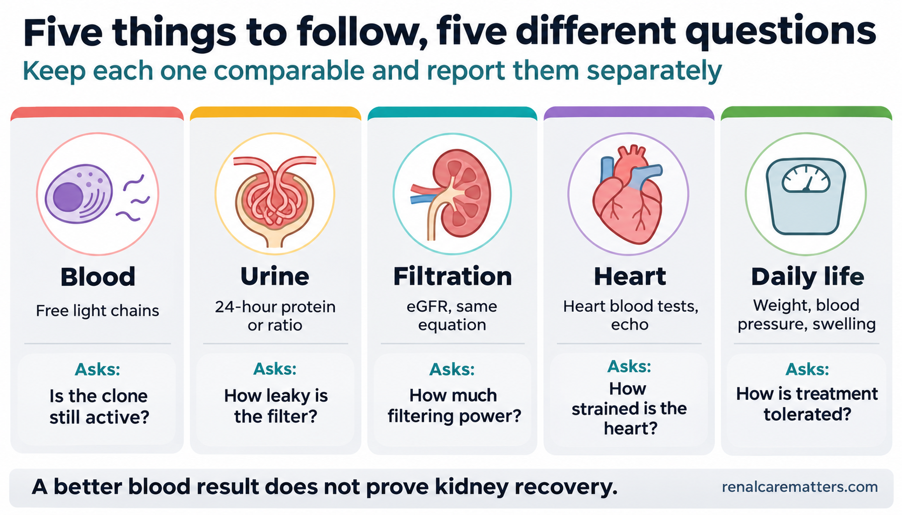
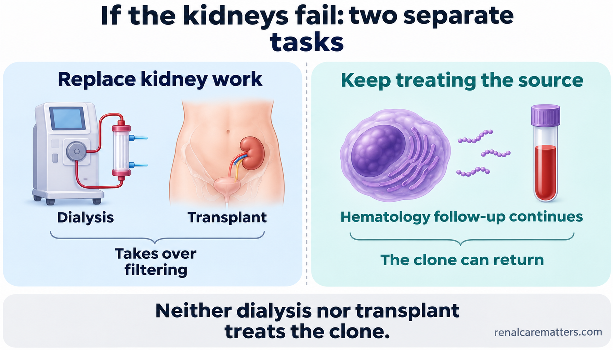
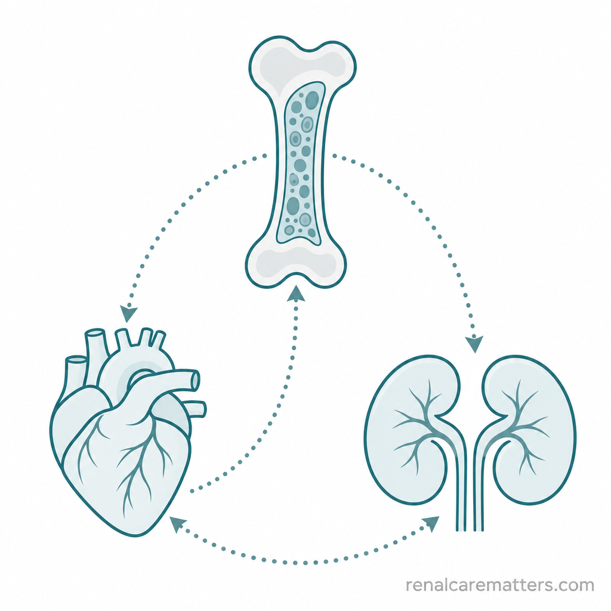
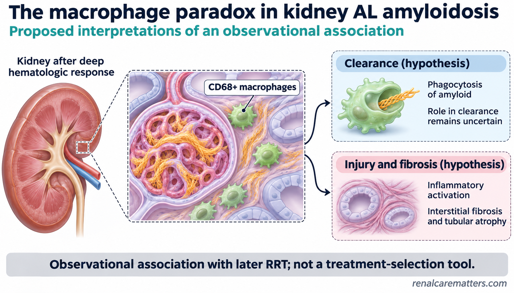
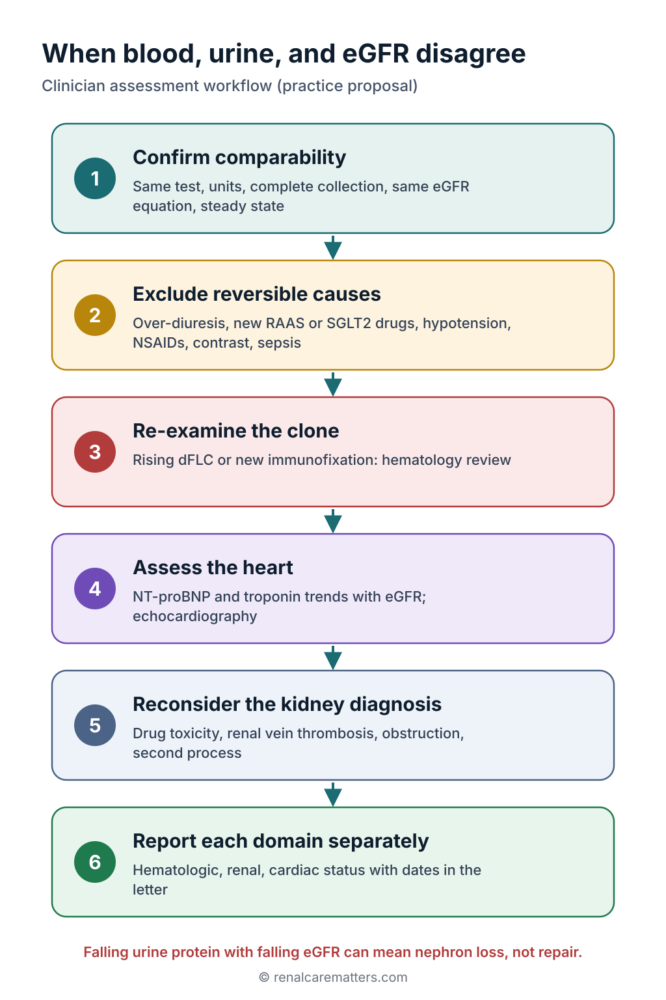

Need help now?Kailangan ng tulong ngayon?Nagkinahanglan og tabang karon?Kailangan saup ngeni?
Get emergency care for chest pain, fainting, severe breathlessness, confusion, or very little or no urine. Get same-day medical advice for fever during treatment, rapidly increasing swelling or weight, dizziness on standing, or vomiting or diarrhea that stops you from eating or drinking. Do not wait to finish the tools on this page.Magpa-emergency care kapag may pananakit ng dibdib, pagkahimatay, matinding hirap sa paghinga, pagkalito, o napakakaunti o walang ihi. Magpatingin sa parehong araw kapag may lagnat habang nagpapagamot, mabilis na lumalalang pamamaga o pagbigat ng timbang, pagkahilo pagtayo, o pagsusuka o pagtatae na pumipigil sa pagkain o pag-inom. Huwag nang hintaying matapos ang mga tool sa pahinang ito.Pag-emergency care kung adunay sakit sa dughan, pagkaluya, grabe nga kalisod sa pagginhawa, pagkalibog, o diyutay kaayo o walay ihi. Pagpatan-aw sa samang adlaw kung adunay hilanat samtang nagpatambal, paspas nga nagkagrabe nga panghubag o pagbug-at sa timbang, pagkalipong pagbarog, o pagsuka o pagkalibanga nga nakapugong sa pagkaon o pag-inom. Ayaw na hulata nga mahuman ang mga tool niini nga pahina.Magpa-emergency care nung atin sakit king salu, pamaglupasay, malalang kasakitan king pamanginga, pamagkalitu, o kakaunti o alang ihi. Magpalawe king pareung aldo nung atin lagnat kabang magpagamut, mabilis a lalalang pamagbaga o pamagbigat ning timbang, pamagkalilu pagtalakad, o pamuta o pamagtae a mamigil king pamangan o paminum. Eme na panayan a mayari deng tool king pahina a iti.
The one-minute answerAng sagot sa isang minutoAng tubag sa usa ka minutoIng sagot king metung a minutu
- Treatment works on the source (plasma cells making light chains) first. The kidneys recover later and more slowly, and sometimes only partly.Una munang tinatamaan ng gamutan ang pinagmumulan (plasma cell na gumagawa ng light chain). Mas huli at mas mabagal gumaling ang bato, at kung minsan ay bahagya lamang.Una nga gitumong sa pagtambal ang gigikanan (plasma cell nga naghimo og light chain). Mas ulahi ug mas hinay nga mouswag ang bato, ug usahay bahin lang.Mumuna nang tatamaan ning pamanulu ing pikuanan (plasma cell a gagawa light chain). Mas tauli at mas mabagal mumayap ing batu, at kekatamu bage mu pamu.
- Persistent urine protein after a good blood response is common and does not by itself mean treatment failed. A falling eGFR (estimated glomerular filtration rate) needs attention even if urine protein falls.Karaniwan ang patuloy na protina sa ihi pagkatapos ng magandang tugon ng dugo at hindi ito nangangahulugang nabigo ang gamutan. Kailangang bantayan ang bumababang eGFR kahit bumababa ang protina sa ihi.Kasagaran ang padayon nga protina sa ihi human sa maayong tubag sa dugo ug dili kini magpasabot nga napakyas ang pagtambal. Kinahanglang bantayan ang nagkunhod nga eGFR bisan mokunhod ang protina sa ihi.Karaniwan ing tuloy-tuloy a protina king ihi kaibat ning mayap a tugon ning daya at ali na buring sabyan a mebigu ing pamanulu. Kailangan bantayan ing bababang eGFR agyang bababa ing protina king ihi.
- Keep tests comparable: same urine test, same units, complete collections, same eGFR equation. Keep both hematology and kidney follow-up.Panatilihing maihahambing ang mga test: parehong test ng ihi, parehong unit, kumpletong koleksyon, parehong equation ng eGFR. Ipagpatuloy ang follow-up sa hematology at sa bato.Pabilina nga matandi ang mga test: parehas nga test sa ihi, parehas nga unit, kompleto nga koleksyon, parehas nga equation sa eGFR. Padayona ang follow-up sa hematology ug sa bato.Panatilian apikumpara deng test: pareung test ning ihi, pareung unit, kumpletung koleksyun, pareung equation ning eGFR. Ituloy ing follow-up king hematology at king batu.
Paalala: draft pa ang salin na ito at hinihintay ang pagsusuri ng katutubong tagapagsalita. Ang Ingles na bersyon ang sinuri.Pahinumdom: draft pa kini nga hubad ug naghulat sa pagsusi sa lumad nga mamumulong. Ang Ingles nga bersyon ang nasusi.Paalala: draft pa ing salin a iti at manaya king pamanigaral ning katutubung manyalita. Ing Ingles a bersyun ing linawe.
What AL amyloidosis is, and what it is notAno ang AL amyloidosis, at ano ang hindiUnsa ang AL amyloidosis, ug unsa ang diliNanu ing AL amyloidosis, at nanu ing ali
In AL (amyloid light-chain) amyloidosis, a small group of plasma cells in the bone marrow makes too much of one antibody piece called a light chain. These light chains fold into the wrong shape, stick together, and settle in organs as amyloid. The kidneys and the heart are the organs most often affected.Sa AL (amyloid light-chain) amyloidosis, isang maliit na grupo ng plasma cell sa bone marrow ang gumagawa ng sobrang dami ng isang piraso ng antibody na tinatawag na light chain. Mali ang pagkakatiklop ng mga light chain na ito, nagdidikit-dikit, at naiipon sa mga organ bilang amyloid. Ang bato at puso ang pinakamadalas na naaapektuhan.Sa AL (amyloid light-chain) amyloidosis, usa ka gamay nga grupo sa plasma cell sa bone marrow ang naghimo og sobra nga usa ka piraso sa antibody nga gitawag og light chain. Sayop ang pagkapilo niini nga mga light chain, magtapot-tapot, ug matipon sa mga organ isip amyloid. Ang bato ug kasingkasing ang kasagarang maapektuhan.King AL (amyloid light-chain) amyloidosis, metung a malating grupu ning plasma cell king bone marrow ing gagawa sobra a dakal a metung a piraso ning antibody a aus dang light chain. Mali ing pamakatiklop dareng light chain a reti, misasaklang, at mitipun la kareng organ bilang amyloid. Ing batu at pusu ing pekamalimit a apektuan.
Plasma cells normally make antibodies to fight infection. A healthy body makes many different light chains, and the kidneys clear the small surplus every day. In AL amyloidosis, one family of identical (monoclonal) plasma cells keeps making a single, unstable light chain. Over months to years it forms stiff fibers that do not dissolve easily. The fibers crowd the organ and disturb how it works.Karaniwang gumagawa ng antibody ang plasma cell para labanan ang impeksyon. Maraming iba't ibang light chain ang ginagawa ng malusog na katawan, at nililinis ng bato ang maliit na sobra araw-araw. Sa AL amyloidosis, isang pamilya ng magkakaparehong (monoclonal) plasma cell ang patuloy na gumagawa ng iisang hindi matatag na light chain. Sa loob ng ilang buwan hanggang taon, bumubuo ito ng matitigas na hibla na hindi madaling matunaw. Sinisikip ng mga hibla ang organ at ginugulo ang paggana nito.Kasagaran naghimo og antibody ang plasma cell aron sumpuon ang impeksyon. Daghang lain-laing light chain ang gihimo sa himsog nga lawas, ug gilimpyohan sa bato ang gamay nga sobra matag adlaw. Sa AL amyloidosis, usa ka pamilya sa managsamang (monoclonal) plasma cell ang padayon nga naghimo og usa ka dili lig-on nga light chain. Sulod sa pipila ka bulan hangtod tuig, mahimo kini nga gahi nga mga lanot nga dili dali matunaw. Gipuno sa mga lanot ang organ ug gigubot ang paglihok niini.Karaniwan gagawa antibody ing plasma cell ban labanan ing impeksyun. Dakal a miyayaliwang light chain ing gagawan ning masalusung katawan, at linisan ning batu ing malating sobra aldo-aldo. King AL amyloidosis, metung a pamilya ning pareu-paring (monoclonal) plasma cell ing tuluy-tuloy a gagawa metung a ali matatag a light chain. King lub ning pilan a bulan anggang banwa, magbuo yang matitigas a ibul a e madaling matunaw. Pasikpitan da ning ibul ing organ at gulun da ing pamagobra na.
AL amyloidosis is not a cancer in the usual sense, but it is treated by hematologists (blood specialists) with medicines like those used for myeloma, because the target is the plasma-cell clone.Hindi ito kanser sa karaniwang kahulugan, pero ginagamot ito ng hematologist (espesyalista sa dugo) gamit ang mga gamot na katulad ng sa myeloma, dahil ang target ay ang clone ng plasma cell.Dili kini kanser sa kasagarang kahulugan, apan gitambalan kini sa hematologist (espesyalista sa dugo) gamit ang mga tambal nga sama sa myeloma, tungod kay ang target mao ang clone sa plasma cell.Ali ya kanser king karaniwang kabaldugan, pero gagamutan ya ning hematologist (espesyalista king daya) gamit ing gamut a kalupa ning king myeloma, uli ta ing target ya ing clone ning plasma cell.
Not all amyloid is the sameHindi pare-pareho ang lahat ng amyloidDili managsama ang tanang amyloidE pare-pareu ing eganagang amyloid
| TypeUriMatangKlasi | Protein in the depositsProtina sa naiiponProtina sa natiponProtina kareng mitipun | Where it comes fromSaan galingAsa gikanNukarin manibat | What treatment targetsTinatarget ng gamutanGitarget sa pagtambalTatarget ning pamanulu |
|---|---|---|---|
| AL | Light chainLight chainLight chainLight chain | A plasma-cell clone in the bone marrowClone ng plasma cell sa bone marrowClone sa plasma cell sa bone marrowClone ning plasma cell king bone marrow | The plasma cellsAng mga plasma cellAng mga plasma cellDeng plasma cell |
| AA (serum amyloid A) | Serum amyloid ASerum amyloid ASerum amyloid ASerum amyloid A | The liver, during long-lasting inflammation or infectionAng atay, sa matagal na pamamaga o impeksyonAng atay, sa dugay nga panghubag o impeksyonIng atay, king matagal a pamagbaga o impeksyun | The inflammation or infectionAng pamamaga o impeksyonAng panghubag o impeksyonIng pamagbaga o impeksyun |
| ATTR (transthyretin) | TransthyretinTransthyretinTransthyretinTransthyretin | The liver; the wild-type form comes with aging, the variant form is inheritedAng atay; ang wild-type ay kasama ng pagtanda, ang variant ay namamanaAng atay; ang wild-type kauban sa pagtigulang, ang variant napanunodIng atay; ing wild-type kayabe ning pangamatwa, ing variant mamana | Medicines that stabilize or lower transthyretin; mainly heart and nervesGamot na nagpapatatag o nagpapababa ng transthyretin; pangunahin sa puso at ugatTambal nga nagpalig-on o nagpaubos sa transthyretin; kasagaran sa kasingkasing ug ugatGamut a mamatatag o mamababa king transthyretin; pangunahin king pusu at ugat |
| Other hereditary formsIbang namamanang uriUbang napanunod nga matangAliwang mamanang klasi | A variant protein, such as fibrinogenIbang anyo ng protina, gaya ng fibrinogenLahi nga porma sa protina, sama sa fibrinogenAliwang anyu ning protina, alimbawa ing fibrinogen | An inherited gene changeNamanang pagbabago sa geneNapanunod nga kausaban sa geneMamanang pamagbayu king gene | Depends on the protein; family counselingNakadepende sa protina; payo sa pamilyaNagdepende sa protina; tambag sa pamilyaMakasalalay king protina; payu king pamilya |
| Dialysis-relatedKaugnay ng dialysisMay kalabotan sa dialysisKaugnay ning dialysis | Beta-2 microglobulinBeta-2 microglobulinBeta-2 microglobulinBeta-2 microglobulin | Builds up over many years of dialysisNaiipon sa maraming taon ng dialysisNatipon sulod sa daghang tuig sa dialysisMitipun king dakal a banwa ning dialysis | Joints and wrists; managed within dialysis careKasukasuan at pulso; inaalagaan sa dialysisLutahan ug pulso; giatiman sulod sa dialysisKasukasuan at pulsu; alagaan king dialysis |
The names sound alike, but the treatments are completely different. That is why the exact type must be proven before treatment starts.Magkakatunog ang mga pangalan, pero ganap na magkakaiba ang gamutan. Kaya kailangang patunayan muna ang eksaktong uri bago magsimula ng gamutan.Managsama ang tingog sa mga ngalan, apan hingpit nga lahi ang pagtambal. Mao nga kinahanglang pamatud-an una ang eksaktong matang sa dili pa magsugod ang pagtambal.Kalupa-lupa la reng lagyu, pero lubusang miyayaliwa ing pamanulu. Kaya kailangan yang patunayan pamu ing eksaktung klasi bayu magumpisa ing pamanulu.

Amyloid types share a name but come from different proteins, so each needs a different treatment.Magkakapareho ang pangalan ng mga uri ng amyloid pero galing sa magkakaibang protina, kaya iba-iba ang gamutan ng bawat isa.Managsama ang ngalan sa mga matang sa amyloid apan gikan sa lain-laing protina, busa lahi ang pagtambal sa matag usa.Pareu ing lagyu dareng klasi ning amyloid pero manibat la king miyayaliwang protina, kaya miyayaliwa ing pamanulu king balang metung.
- AL
- Amyloid light-chain amyloidosis
- AA
- Serum amyloid A amyloidosis
- ATTR
- Transthyretin amyloidosis
How amyloid affects the kidneysPaano naaapektuhan ng amyloid ang batoGiunsa pag-apektar sa amyloid ang batoMakananu nang apektuan ning amyloid ing batu
Each kidney has about a million filtering units. At the start of each unit is the glomerulus, a tuft of tiny blood vessels whose wall works like a fine sieve: water and wastes pass through, but proteins such as albumin stay in the blood.May humigit-kumulang isang milyong pansala ang bawat bato. Sa simula ng bawat isa ay ang glomerulus, isang kumpol ng maliliit na daluyan ng dugo na ang dingding ay parang pinong salaan: nakadaraan ang tubig at dumi, pero naiiwan sa dugo ang protina gaya ng albumin.Adunay mga usa ka milyon nga pansala ang matag bato. Sa sinugdanan sa matag usa mao ang glomerulus, usa ka pungpong sa gagmay nga ugat sa dugo nga ang bungbong sama sa pino nga salaan: makaagi ang tubig ug hugaw, apan magpabilin sa dugo ang protina sama sa albumin.Atin intang metung a milyung pansala ing balang batu. King pamimuklat ning balang metung atyu ing glomerulus, metung a kumpul dareng malating dalanan ning daya a ing pader na anti mo ing pinung salaan: makalabas ing danum at dumi, pero matagan king daya ing protina anti ing albumin.
In AL amyloidosis, fibers are often laid down in that sieve wall. The barrier becomes leaky, and large amounts of protein escape into the urine. When the loss is heavy, the blood albumin falls and fluid seeps into the tissues: swollen legs, puffy eyes, foamy urine, and sometimes fluid around the lungs or in the abdomen. Doctors call this pattern nephrotic syndrome.Sa AL amyloidosis, madalas maipon ang hibla sa dingding ng salaang iyon. Tumatagas ang harang, at maraming protina ang lumalabas sa ihi. Kapag malaki ang nawawala, bumababa ang albumin sa dugo at tumatagas ang likido sa mga tissue: namamagang binti, mapupungay na mata, mabulang ihi, at kung minsan ay tubig sa paligid ng baga o sa tiyan. Tinatawag ito ng mga doktor na nephrotic syndrome.Sa AL amyloidosis, kasagaran matipon ang lanot sa bungbong sa maong salaan. Motulo ang babag, ug daghang protina ang mogawas sa ihi. Kung dako ang nawala, mokunhod ang albumin sa dugo ug motulo ang likido ngadto sa mga tissue: hubag nga bitiis, hubag nga mata, bulahon nga ihi, ug usahay tubig palibot sa baga o sa tiyan. Gitawag kini sa mga doktor og nephrotic syndrome.King AL amyloidosis, malimit mitipun ing ibul king pader ning salaan a ita. Tumulu ya ing harang, at dakal a protina ing lalabas king ihi. Nung maragul ing mawawala, bababa ing albumin king daya at tutulu ing likidu kareng tissue: mamaga ing bitis, mapuyung mata, mabulang ihi, at kekatamung danum king palibut ning baga o king atian. Aus da ning doktor iti a nephrotic syndrome.
Amyloid can also collect in small blood vessels and between the kidney tubules. Over time, some filtering units scar and stop working, and the kidney's filtering power, estimated as eGFR (estimated glomerular filtration rate), can fall. When it stays reduced for more than three months, it is called chronic kidney disease (CKD).Maaari ring maipon ang amyloid sa maliliit na daluyan ng dugo at sa pagitan ng mga tubule ng bato. Sa paglipas ng panahon, nagkakapeklat at humihinto ang ilang pansala, at maaaring bumaba ang lakas ng pagsala ng bato, na tinatantiya bilang eGFR (estimated glomerular filtration rate). Kapag nanatili itong mababa nang higit sa tatlong buwan, tinatawag itong chronic kidney disease (CKD).Mahimo usab nga matipon ang amyloid sa gagmay nga ugat sa dugo ug tali sa mga tubule sa bato. Sa paglabay sa panahon, ang pipila ka pansala magpeklat ug mohunong, ug mahimong mokunhod ang kusog sa pagsala sa bato, nga gibanabana isip eGFR (estimated glomerular filtration rate). Kung magpabilin kini nga ubos labaw sa tulo ka bulan, gitawag kini og chronic kidney disease (CKD).Malyari mu namang mitipun ing amyloid kareng malating dalanan ning daya at king pagitan dareng tubule ning batu. King paglabas ning panaun, magpeklat la at tuminan deng pilan a pansala, at malyaring bumaba ing sikan ning pamanala ning batu, a tatantyan bilang eGFR (estimated glomerular filtration rate). Nung manatili yang mababa lagpas atlung bulan, aus de chronic kidney disease (CKD).

Amyloid thickens the filter wall so protein leaks into the urine; over time some filtering units scar and eGFR can fall.Pinakakapal ng amyloid ang dingding ng pansala kaya tumatagas ang protina sa ihi; sa paglipas ng panahon, nagkakapeklat ang ilang pansala at maaaring bumaba ang eGFR.Gipabaga sa amyloid ang bungbong sa pansala busa motulo ang protina sa ihi; sa paglabay sa panahon, magpeklat ang pipila ka pansala ug mahimong mokunhod ang eGFR.Pakapalan ning amyloid ing pader ning pansala kaya tutulu ing protina king ihi; king paglabas ning panaun, magpeklat la reng pilan a pansala at malyaring bumaba ing eGFR.
- eGFR
- Estimated glomerular filtration rate
Two separate kidney jobsDalawang magkahiwalay na trabaho ng batoDuha ka managlahing trabaho sa batoAdwang miyayaliwang obra ning batu
Holding protein in and filtering wastes out are different jobs. Urine-protein tests measure the first; eGFR estimates the second. They can move in different directions, so your team watches both.Magkaibang trabaho ang pagpigil sa protina at ang pagsala ng dumi palabas. Sinusukat ng test ng protina sa ihi ang una; tinatantiya ng eGFR ang pangalawa. Maaaring magkaiba ang direksyon nila, kaya pareho itong binabantayan ng inyong team.Lahi nga trabaho ang pagpugong sa protina ug ang pagsala sa hugaw pagawas. Gisukod sa test sa protina sa ihi ang una; gibanabana sa eGFR ang ikaduha. Mahimong lahi ang ilang direksyon, busa gibantayan sa inyong team ang duha.Miyayaliwang obra ing pamamigil king protina at ing pamanala king dumi palwal. Susukatan ning test ning protina king ihi ing mumuna; tatantyan ning eGFR ing kadua. Malyaring miyayaliwa ing direksyun da, kaya parehu lang babantayan ning team yu.
Confirming the type: three questionsPagkumpirma ng uri: tatlong tanongPagkumpirma sa matang: tulo ka pangutanaPamangumpirma king klasi: atlung kutang
A diagnosis of AL amyloidosis should answer three separate questions. A blood test that finds an abnormal antibody protein answers only the third, and it is not enough on its own: many older adults carry a harmless monoclonal protein while having a different kind of amyloid, or none at all.Dapat sagutin ng diagnosis ng AL amyloidosis ang tatlong magkahiwalay na tanong. Ang blood test na nakakita ng abnormal na protina ng antibody ay sumasagot lamang sa pangatlo, at hindi ito sapat nang mag-isa: maraming nakatatanda ang may hindi mapanganib na monoclonal protein habang may ibang uri ng amyloid, o wala talaga.Kinahanglang tubagon sa diagnosis sa AL amyloidosis ang tulo ka managlahing pangutana. Ang blood test nga nakakita og abnormal nga protina sa antibody motubag lang sa ikatulo, ug dili kini igo nga mag-inusara: daghang tigulang ang adunay dili delikado nga monoclonal protein samtang adunay laing matang sa amyloid, o wala gayud.Dapat sagutan ning diagnosis ning AL amyloidosis ing atlung miyayaliwang kutang. Ing blood test a akit abnormal a protina ning antibody sasagutan na mu pamu ing katlu, at e ya sapat nung bukud: dakal a matwang tau ing atin e mapanganib a monoclonal protein kabang atin aliwang klasi ning amyloid, o ala talaga.
Not everyone needs a kidney biopsy. The American Society of Hematology (ASH) 2026 guideline on diagnosis supports combining a bone-marrow biopsy with a fat-pad sample in most people, and keeps a biopsy of the affected organ for selected situations. When kidney disease is the main problem, a kidney biopsy is often the clearest route. Your team chooses the site based on safety and on what is most likely to give an answer.Hindi lahat ay nangangailangan ng kidney biopsy. Sinusuportahan ng 2026 na gabay sa diagnosis ng American Society of Hematology (ASH) ang pagsasama ng bone-marrow biopsy at fat-pad sample sa karamihan, at inilalaan ang biopsy ng apektadong organ para sa piling sitwasyon. Kapag sakit sa bato ang pangunahing problema, kadalasang kidney biopsy ang pinakamalinaw na daan. Pinipili ng inyong team ang lugar ayon sa kaligtasan at sa kung ano ang pinakamalamang na magbigay ng sagot.Dili tanan nagkinahanglan og kidney biopsy. Gisuportahan sa 2026 nga giya sa diagnosis sa American Society of Hematology (ASH) ang paghiusa sa bone-marrow biopsy ug fat-pad sample sa kadaghanan, ug gitagana ang biopsy sa naapektuhang organ alang sa pinili nga sitwasyon. Kung sakit sa bato ang pangunang problema, kasagaran kidney biopsy ang labing klaro nga dalan. Gipili sa inyong team ang dapit base sa kaluwasan ug kung unsa ang labing lagmit nga mohatag og tubag.Ali eganaga kailangan kidney biopsy. Suportan na ning 2026 a giya king diagnosis ning American Society of Hematology (ASH) ing pamisanib ning bone-marrow biopsy at fat-pad sample king karamwan, at ilaan na ing biopsy ning apektadung organ para kareng piling sitwasyun. Nung sakit king batu ing pangunahing problema, karaniwan kidney biopsy ing pekamalinong dalan. Pilian ning team yu ing lugal agpang king kaligtasan at nung nanu ing pekamalyaring mamye sagot.

The three diagnostic questions and the test that answers each: tissue stain for amyloid, typing for the protein, and blood, urine, and marrow tests for the clone.Ang tatlong tanong sa diagnosis at ang test na sumasagot sa bawat isa: stain ng tissue para sa amyloid, typing para sa protina, at blood, urine, at marrow test para sa clone.Ang tulo ka pangutana sa diagnosis ug ang test nga motubag sa matag usa: stain sa tissue alang sa amyloid, typing alang sa protina, ug blood, urine, ug marrow test alang sa clone.Deng atlung kutang king diagnosis at ing test a sasagut king balang metung: stain ning tissue para king amyloid, typing para king protina, at blood, urine, at marrow test para king clone.
- AL
- Amyloid light-chain amyloidosis
- AA
- Serum amyloid A amyloidosis
- ATTR
- Transthyretin amyloidosis
Why the blood can improve before the kidneys doBakit maaaring gumaling ang dugo bago ang batoNganong mahimong mouswag ang dugo sa dili pa ang batoNung bakit malyaring mumayap ing daya bayu ing batu
Picture a factory upstream that leaks waste into a river. Treatment shuts the factory down. The waste already in the river stays until it is slowly cleared, and the riverbank it damaged may keep some scars.Isipin ang isang pabrika sa itaas ng ilog na tumatagas ng dumi. Isinasara ng gamutan ang pabrika. Nananatili ang duming nasa ilog na hanggang dahan-dahan itong malinis, at maaaring may maiwang peklat sa pampang na nasira nito.Hunahunaa ang usa ka pabrika sa ibabaw sa suba nga nagtulo og hugaw. Gisirad-an sa pagtambal ang pabrika. Magpabilin ang hugaw nga anaa na sa suba hangtod hinay-hinay kining malimpyohan, ug mahimong adunay mabilin nga peklat sa pangpang nga nadaot niini.Isipan ye ing metung a pabrika king babo ning ilug a tutulu dumi. Isara ning pamanulu ing pabrika. Matagan ing dumi a atyu na king ilug anggang dahan-dahan yang malinis, at malyaring atin matagan a peklat king pampang a sinira na.
In medical terms, recovery has three parts that move on different clocks:Sa medikal na paliwanag, may tatlong bahagi ang paggaling na magkakaiba ang bilis:Sa medikal nga pagpasabot, adunay tulo ka bahin ang pagkaayo nga lain-lain ang kapaspas:King medikal a paliwanag, atin atlung bage ing pamagmayap a miyayaliwa ing bilis:
- Light-chain production is measured in the blood with free light chains and immunofixation. Effective treatment can lower it within weeks to months. This is the hematologic (blood) response.Ang paggawa ng light chain ay sinusukat sa dugo gamit ang free light chains at immunofixation. Maaari itong pababain ng mabisang gamutan sa loob ng ilang linggo hanggang buwan. Ito ang hematologic (blood) response.Ang paghimo og light chain gisukod sa dugo gamit ang free light chains ug immunofixation. Mahimo kining ipaubos sa epektibong pagtambal sulod sa pipila ka semana hangtod bulan. Kini ang hematologic (blood) response.Ing pamagawa ning light chain susukatan king daya gamit ing free light chains at immunofixation. Malyari neng pababan ning mabisang pamanulu king lub ning pilan a linggu anggang bulan. Iti ing hematologic (blood) response.
- Deposits already in the organ are cleared slowly, partly by clean-up cells called macrophages, through processes that are still not fully understood. This takes many months to years and differs from person to person.Ang naipon na sa organ ay dahan-dahang nalilinis, bahagya sa tulong ng mga panlinis na cell na tinatawag na macrophage, sa mga prosesong hindi pa lubos na nauunawaan. Inaabot ito ng maraming buwan hanggang taon at nag-iiba sa bawat tao.Ang natipon na sa organ hinay-hinay nga malimpyohan, bahin sa tabang sa mga panlimpyo nga cell nga gitawag og macrophage, pinaagi sa mga proseso nga wala pa hingpit masabti. Molungtad kini og daghang bulan hangtod tuig ug lahi sa matag tawo.Ing mitipun na king organ dahan-dahan yang malinis, bage king saup dareng panlinis a cell a aus dang macrophage, kareng prosesu a e pa lubusang aintindyan. Abutan ya ning dakal a bulan anggang banwa at miyayaliwa king balang tau.
- Organ function is how well the kidney holds protein in and filters wastes out. It improves only as deposits shrink and injured tissue recovers. Scarred tissue may not recover.Ang paggana ng organ ay kung gaano kahusay pinipigilan ng bato ang protina at sinasala ang dumi. Gumagaling lamang ito habang lumiliit ang naipon at gumagaling ang napinsalang tissue. Maaaring hindi na gumaling ang may peklat na tissue.Ang paglihok sa organ mao kung unsa ka maayo gipugngan sa bato ang protina ug gisala ang hugaw. Mouswag lang kini samtang mogamay ang natipon ug maayo ang nadaot nga tissue. Mahimong dili na maayo ang tissue nga adunay peklat.Ing pamagobra ning organ yang nung makananu kayap pigilan ning batu ing protina at salan ing dumi. Mumayap ya mu pamu kabang lumati ing mitipun at mumayap ing apinsalang tissue. Malyaring e na mumayap ing tissue a atin peklat.

Three parts of recovery: treatment suppresses light-chain production first; existing deposits clear slowly; kidney function improves later and may stay partly scarred.Tatlong bahagi ng paggaling: unang pinabababa ng gamutan ang paggawa ng light chain; dahan-dahang nalilinis ang naipon; mas huling gumagaling ang paggana ng bato at maaaring may manatiling peklat.Tulo ka bahin sa pagkaayo: unang gipaubos sa pagtambal ang paghimo og light chain; hinay-hinay nga malimpyohan ang natipon; mas ulahi nga mouswag ang paglihok sa bato ug mahimong adunay magpabilin nga peklat.Atlung bage ning pamagmayap: mumuna pababan ning pamanulu ing pamagawa ning light chain; dahan-dahan yang malinis ing mitipun; mas tauli yang mumayap ing pamagobra ning batu at malyaring atin matagan a peklat.
- AL
- Amyloid light-chain amyloidosis
- eGFR
- Estimated glomerular filtration rate
So a person can reach an excellent blood response while urine protein is still high. That is common, and on its own it does not mean that treatment failed. Doctors usually judge the kidney response by comparing 24-hour urine protein and eGFR with the starting values over 6 to 12 months or longer. Published kidney-response criteria count a fall in urine protein only when filtration has not dropped substantially at the same time.Kaya maaaring maabot ng isang tao ang napakahusay na tugon ng dugo habang mataas pa ang protina sa ihi. Karaniwan ito, at hindi ito nangangahulugang nabigo ang gamutan. Karaniwang hinuhusgahan ng doktor ang tugon ng bato sa paghahambing ng 24-oras na protina sa ihi at eGFR sa simulang halaga sa loob ng 6 hanggang 12 buwan o higit pa. Binibilang lamang ng nailathalang pamantayan ang pagbaba ng protina sa ihi kapag hindi gaanong bumaba ang pagsala sa parehong panahon.Busa mahimong maabot sa usa ka tawo ang maayo kaayo nga tubag sa dugo samtang taas pa ang protina sa ihi. Kasagaran kini, ug dili kini magpasabot nga napakyas ang pagtambal. Kasagaran gihukman sa doktor ang tubag sa bato pinaagi sa pagtandi sa 24-oras nga protina sa ihi ug eGFR sa sinugdanang numero sulod sa 6 hangtod 12 ka bulan o labaw pa. Giihap lang sa gipatik nga sukdanan ang pagkunhod sa protina sa ihi kung wala kaayo mikunhod ang pagsala sa samang panahon.Kaya malyaring asaup ning metung a tau ing mayap a tugon ning daya kabang matas pa ing protina king ihi. Karaniwan iti, at ali na buring sabyan a mebigu ing pamanulu. Karaniwan dang pasyalan ning doktor ing tugon ning batu king pamikumpara ning 24-oras a protina king ihi at eGFR king mumunang numeru king lub ning 6 anggang 12 a bulan o lagpas. Bibilangan mu pamu ning pepalwal a pamantayan ing pamagbaba ning protina king ihi nung e masyadung mibaba ing pamanala king pareung panaun.
Blood remission is not the finish lineHindi katapusan ang remission ng dugoDili katapusan ang remission sa dugoAli ya katapusan ing remission ning daya
Stopping new light chains is the most important step, because it stops new deposits. Kidneys still need follow-up, and blood tests still need repeating, because the clone can return.Ang pagpapahinto sa bagong light chain ang pinakamahalagang hakbang, dahil pinahihinto nito ang bagong pag-ipon. Kailangan pa rin ng follow-up ang bato, at kailangan pa ring ulitin ang blood test, dahil maaaring bumalik ang clone.Ang pagpahunong sa bag-ong light chain ang labing importante nga lakang, tungod kay gipahunong niini ang bag-ong pagtipon. Kinahanglan gihapon og follow-up ang bato, ug kinahanglan gihapon usbon ang blood test, tungod kay mahimong mobalik ang clone.Ing pamamatuli king bayung light chain ing pekamayalagang addang, uli ta pamatuli na ing bayung pamanipun. Kailangan pa murin ning follow-up ing batu, at kailangan pa murin ulitan ing blood test, uli ta malyaring mibalik ing clone.
Treatment targets the sourceTinatarget ng gamutan ang pinagmumulanGitarget sa pagtambal ang gigikananTatarget ning pamanulu ing pikuanan
Because the problem starts with the plasma-cell clone, the main treatment is aimed at those cells. A common first treatment combines an antibody called daratumumab with bortezomib, cyclophosphamide, and dexamethasone. In a large randomized trial, adding daratumumab to the other three medicines produced deeper blood responses and more kidney responses at six months. Some people are suitable for high-dose treatment with stem-cell support.Dahil nagsisimula ang problema sa clone ng plasma cell, nakatuon sa mga cell na iyon ang pangunahing gamutan. Karaniwang unang gamutan ang pagsasama ng antibody na daratumumab kasama ang bortezomib, cyclophosphamide, at dexamethasone. Sa isang malaking randomized trial, ang pagdagdag ng daratumumab sa tatlong iba pang gamot ay nagbunga ng mas malalim na tugon ng dugo at mas maraming tugon ng bato sa ika-anim na buwan. Angkop ang ilan para sa high-dose na gamutan na may suporta ng stem cell.Tungod kay nagsugod ang problema sa clone sa plasma cell, gitumong sa maong mga cell ang pangunang pagtambal. Kasagarang unang pagtambal ang paghiusa sa antibody nga daratumumab uban sa bortezomib, cyclophosphamide, ug dexamethasone. Sa usa ka dako nga randomized trial, ang pagdugang sa daratumumab sa tulo ka ubang tambal mihatag og mas lawom nga tubag sa dugo ug mas daghang tubag sa bato sa ikaunom nga bulan. Angay ang pipila alang sa high-dose nga pagtambal nga adunay suporta sa stem cell.Uli ta mumpisa ing problema king clone ning plasma cell, makatuun kareng cell a ita ing pangunahing pamanulu. Karaniwang mumunang pamanulu ing pamisanib ning antibody a daratumumab kayabe ning bortezomib, cyclophosphamide, at dexamethasone. King metung a maragul a randomized trial, ing pamagdagdag ning daratumumab kareng atlung aliwang gamut mamye mas malalam a tugon ning daya at mas dakal a tugon ning batu king kaanam a bulan. Angkup la reng pilan para king high-dose a pamanulu a atin suporta ning stem cell.
The aim is a deep blood response. Improvements in the kidneys and heart usually follow later and more slowly.Ang layunin ay malalim na tugon ng dugo. Kadalasang mas huli at mas mabagal ang paggaling ng bato at puso.Ang tumong mao ang lawom nga tubag sa dugo. Kasagaran mas ulahi ug mas hinay ang pag-uswag sa bato ug kasingkasing.Ing pakay yang malalam a tugon ning daya. Karaniwan mas tauli at mas mabagal ing pamagmayap ning batu at pusu.
Safety points to discuss with your teamMga punto ng kaligtasan na pag-usapan sa inyong teamMga punto sa kaluwasan nga hisgotan sa inyong teamReng puntu ning kaligtasan a pisabyan kayabe ning team yu
- Whether medicine doses need adjusting for your kidney function.Kung kailangang iayon ang dosis ng gamot sa paggana ng iyong bato.Kung kinahanglang ipahiangay ang dosis sa tambal sa paglihok sa imong bato.Nung kailangan ibagay ing dosis ning gamut king pamagobra ning batu mu.
- How to prevent and recognize infection while on treatment.Paano iwasan at makilala ang impeksyon habang nagpapagamot.Unsaon paglikay ug pag-ila sa impeksyon samtang nagpatambal.Makananu ing likwan at kilalanan ing impeksyun kabang magpagamut.
- Swelling, blood pressure, and fluid changes during treatment.Pamamaga, presyon ng dugo, at pagbabago sa likido habang nagpapagamot.Panghubag, presyon sa dugo, ug kausaban sa likido samtang nagpatambal.Pamagbaga, presyon ning daya, at pamagbayu king likidu kabang magpagamut.
- Telling every doctor and dentist that you are on treatment, and never starting or stopping medicines on your own.Pagsasabi sa bawat doktor at dentista na nagpapagamot ka, at hindi kailanman magsisimula o hihinto ng gamot nang mag-isa.Pagsulti sa matag doktor ug dentista nga nagpatambal ka, ug dili gayud magsugod o mohunong og tambal nga ikaw ra.Pamagsabi king balang doktor at dentista a magpagamut ka, at e mu kailanman umpisan o pamatulian ing gamut nung bukud mu.
Access differs by country. A medicine approved in the United States may not be registered, available, or covered in the Philippines. Ask your hematologist what is available to you and how it can be funded.Nag-iiba ang access sa bawat bansa. Ang gamot na aprubado sa United States ay maaaring hindi rehistrado, wala, o hindi sakop sa Pilipinas. Itanong sa iyong hematologist kung ano ang available sa iyo at paano ito mapopondohan.Lahi ang access sa matag nasud. Ang tambal nga aprobado sa United States mahimong dili rehistrado, wala, o dili sakop sa Pilipinas. Pangutan-a ang imong hematologist kung unsa ang available kanimo ug unsaon kini pagpundo.Miyayaliwa ing access king balang bansa. Ing gamut a aprubadu king United States malyaring e rehistradu, ala, o e sakup king Pilipinas. Kutnan me ing hematologist mu nung nanu ing available keka at makananu yang apondoan.
Following the numbers, and keeping them comparablePagsubaybay sa mga numero, at panatilihing maihahambing ang mga itoPagsubay sa mga numero, ug pagpabilin nga matandi kiniPamanubaybay kareng numeru, at panatilian lang apikumpara
Several kinds of results are followed. Each answers a different question.Iba't ibang uri ng resulta ang sinusubaybayan. Iba ang tanong na sinasagot ng bawat isa.Lain-laing matang sa resulta ang gisubay. Lahi ang pangutana nga gitubag sa matag usa.Miyayaliwang klasi ning resulta ing panubaybayan. Miyayaliwa ing kutang a sasagutan ning balang metung.
| MeasurementSukatSukodSukat | What it tells youAno ang sinasabi nitoUnsa ang gisulti niiniNanu ing sasabyan na | Comparable over time whenMaihahambing sa paglipas ng panahon kapagMatandi sa paglabay sa panahon kungApikumpara king paglabas ning panaun nung |
|---|---|---|
| Serum free light chains and immunofixationSerum free light chains at immunofixationSerum free light chains ug immunofixationSerum free light chains at immunofixation | Whether the clone is still making light chains (blood response)Kung gumagawa pa ng light chain ang clone (tugon ng dugo)Kung naghimo pa og light chain ang clone (tubag sa dugo)Nung gagawa pa light chain ing clone (tugon ning daya) | The same type of assay is usedIisang uri ng assay ang ginagamitParehas nga matang sa assay ang gigamitMetung a mu klasi ning assay ing gagamitan |
| 24-hour urine total protein24-oras na kabuuang protina sa ihi24-oras nga kinatibuk-ang protina sa ihi24-oras a kabuuang protina king ihi | How much protein leaks per day; used in formal kidney-response criteriaGaano karaming protina ang tumatagas bawat araw; ginagamit sa pormal na pamantayan ng tugon ng batoPila ka protina ang motulo matag adlaw; gigamit sa pormal nga sukdanan sa tubag sa batoNung pilan a protina ing tutulu balang aldo; gagamitan king pormal a pamantayan ning tugon ning batu | Each collection is complete and timedKumpleto at nakaorasan ang bawat koleksyonKompleto ug na-orasan ang matag koleksyonKumpletu at atin oras ing balang koleksyun |
| Urine protein-to-creatinine ratio (UPCR) or albumin-to-creatinine ratio (UACR)Urine protein-to-creatinine ratio (UPCR) o albumin-to-creatinine ratio (UACR)Urine protein-to-creatinine ratio (UPCR) o albumin-to-creatinine ratio (UACR)Urine protein-to-creatinine ratio (UPCR) o albumin-to-creatinine ratio (UACR) | A spot estimate of leakage from one urine sampleTantiya ng pagtagas mula sa isang sample ng ihiBanabana sa pagtulo gikan sa usa ka sample sa ihiTantya ning pamanulu manibat king metung a sample ning ihi | Same test and same unit every timeParehong test at parehong unit sa bawat pagkakataonParehas nga test ug parehas nga unit matag higayonPareung test at pareung unit king balang pamanyulit |
| eGFReGFReGFReGFR | Estimated filtering powerTinatayang lakas ng pagsalaGibanabana nga kusog sa pagsalaTinantyang sikan ning pamanala | Same equation; adult; stable, not during acute illness or dialysisParehong equation; adulto; matatag, hindi habang may biglaang sakit o dialysisParehas nga equation; hamtong; lig-on, dili samtang adunay kalit nga sakit o dialysisPareung equation; matwa; matatag, ali kabang atin biglang sakit o dialysis |
| Heart blood tests (NT-proBNP, troponin)Blood test sa puso (NT-proBNP, troponin)Blood test sa kasingkasing (NT-proBNP, troponin)Blood test king pusu (NT-proBNP, troponin) | Strain on the heart from amyloidPagkapagod ng puso dahil sa amyloidKakapoy sa kasingkasing tungod sa amyloidPamakapagal ning pusu uli ning amyloid | Read together with kidney function, which also raises themBinabasa kasama ng paggana ng bato, na nagpapataas din sa mga itoGibasa uban sa paglihok sa bato, nga nagpataas usab niiniBasan kayabe ning pamagobra ning batu, a pamatas mu naman kareni |
| Weight, blood pressure, swellingTimbang, presyon ng dugo, pamamagaTimbang, presyon sa dugo, panghubagTimbang, presyon ning daya, pamagbaga | Fluid balance and how treatment is toleratedBalanse ng likido at kung paano kinakaya ang gamutanBalanse sa likido ug kung giunsa pag-agwanta sa pagtambalBalanse ning likidu at nung makananu ing pamanagal king pamanulu | Same scale and same time of dayParehong timbangan at parehong oras ng arawParehas nga timbangan ug parehas nga oras sa adlawPareung timbangan at pareung oras ning aldo |

The five things followed in AL amyloidosis, each answering a different question: blood light chains, urine protein, kidney filtration, heart markers, and how you feel.Ang limang binabantayan sa AL amyloidosis, bawat isa may ibang tanong: light chain sa dugo, protina sa ihi, pagsala ng bato, marker ng puso, at ang iyong pakiramdam.Ang lima ka gisubay sa AL amyloidosis, matag usa adunay lahi nga pangutana: light chain sa dugo, protina sa ihi, pagsala sa bato, marker sa kasingkasing, ug ang imong gibati.Deng limang babantayan king AL amyloidosis, balang metung atin aliwang kutang: light chain king daya, protina king ihi, pamanala ning batu, marker ning pusu, at ing pakiramdam mu.
- eGFR
- Estimated glomerular filtration rate
A few rules keep the numbers honest. A 24-hour collection that missed some urine looks falsely better. UACR and UPCR are different tests. mg/g and mg/mmol are different units. eGFR is not reliable during dialysis or acute illness, and adult equations do not apply to children.May ilang tuntunin para manatiling tapat ang mga numero. Ang 24-oras na koleksyon na may nakaligtaang ihi ay mukhang mas maganda kaysa totoo. Magkaibang test ang UACR at UPCR. Magkaibang unit ang mg/g at mg/mmol. Hindi maaasahan ang eGFR habang nagda-dialysis o may biglaang sakit, at hindi angkop sa bata ang equation para sa adulto.Adunay pipila ka lagda aron magpabilin nga tinuod ang mga numero. Ang 24-oras nga koleksyon nga adunay nalaktawan nga ihi mopatim-aw nga mas maayo kaysa tinuod. Lahi nga test ang UACR ug UPCR. Lahi nga unit ang mg/g ug mg/mmol. Dili kasaligan ang eGFR samtang nag-dialysis o adunay kalit nga sakit, ug dili angay sa bata ang equation alang sa hamtong.Atin pilan a tuntunin ban manatiling tapat deng numeru. Ing 24-oras a koleksyun a atin ekalingwan a ihi lumto yang mas mayap kesa king totu. Miyayaliwang test ing UACR at UPCR. Miyayaliwang unit ing mg/g at mg/mmol. E maaasan ing eGFR kabang magdialysis o atin biglang sakit, at e angkup king anak ing equation para king matwa.
Kidney Trend ComparatorKidney Trend ComparatorKidney Trend ComparatorKidney Trend Comparator
Enter two dated urine-protein results, two dated eGFR results, or both. The tool shows the arithmetic and explains when numbers should not be compared. It does not classify response, diagnose relapse, or predict dialysis. Your entries stay on this page and are not saved or sent anywhere.Ilagay ang dalawang may-petsang resulta ng protina sa ihi, dalawang may-petsang eGFR, o pareho. Ipinapakita ng tool ang kuwenta at ipinapaliwanag kung kailan hindi dapat ihambing ang mga numero. Hindi nito inuuri ang tugon, hindi nagda-diagnose ng pagbabalik ng sakit, at hindi naghuhula ng dialysis. Nananatili sa pahinang ito ang inilagay mo at hindi ito sine-save o ipinapadala kahit saan.Isulod ang duha ka adunay-petsa nga resulta sa protina sa ihi, duha ka adunay-petsa nga eGFR, o ang duha. Gipakita sa tool ang kuwenta ug gipatin-aw kung kanus-a dili angay itandi ang mga numero. Dili kini moklasipikar sa tubag, dili mo-diagnose sa pagbalik sa sakit, ug dili motag-an sa dialysis. Magpabilin niini nga pahina ang imong gisulod ug dili kini i-save o ipadala bisan asa.Ilagay ing adwang atin-petsang resulta ning protina king ihi, adwang atin-petsang eGFR, o parehu. Pakit na ning tool ing kuwenta at ipaliwanag na nung kapilan e dapat ikumpara deng numeru. Ali na iuuri ing tugon, ali ya mag-diagnose ning pamanibalik ning sakit, at ali ya manula dialysis. Matagan king pahina a iti ing inilagay mu at e ya i-save o ipadala nanu man.
Paper worksheet (print or copy by hand)Papel na worksheet (i-print o kopyahin sa kamay)Papel nga worksheet (i-print o kopyaha sa kamot)Papel a worksheet (i-print o kopyan king gamat)
| MeasurementSukatSukodSukat | Earlier: date and valueMas nauna: petsa at halagaNauna: petsa ug numeroMas mumuna: petsa at numeru | Later: date and valueMas huli: petsa at halagaUlahi: petsa ug numeroMas tauli: petsa at numeru | Same test, unit, method?Parehong test, unit, paraan?Parehas nga test, unit, pamaagi?Pareung test, unit, paralan? | Notes from your teamTala mula sa inyong teamNota gikan sa inyong teamTala manibat king team yu |
|---|---|---|---|---|
| 24-hour urine protein (complete collection?)24-oras na protina sa ihi (kumpletong koleksyon?)24-oras nga protina sa ihi (kompleto nga koleksyon?)24-oras a protina king ihi (kumpletung koleksyun?) | ||||
| UPCR or UACR (which one, which unit?)UPCR o UACR (alin, anong unit?)UPCR o UACR (asa, unsang unit?)UPCR o UACR (nanu, nanung unit?) | ||||
| eGFR (which equation? stable? adult? not on dialysis?)eGFR (anong equation? matatag? adulto? hindi nagda-dialysis?)eGFR (unsang equation? lig-on? hamtong? dili nag-dialysis?)eGFR (nanung equation? matatag? matwa? e magdialysis?) |
Change = later − earlier. Percent change = 100 × (later − earlier) ÷ earlier. A negative number is a decrease. This is a numerical comparison, not a treatment-response classification.Pagbabago = mas huli − mas nauna. Porsyentong pagbabago = 100 × (mas huli − mas nauna) ÷ mas nauna. Ang negatibong numero ay pagbaba. Isa itong paghahambing ng numero, hindi pag-uuri ng tugon sa gamutan.Kausaban = ulahi − nauna. Porsyento nga kausaban = 100 × (ulahi − nauna) ÷ nauna. Ang negatibo nga numero pagkunhod. Kini usa ka pagtandi sa numero, dili pagklasipikar sa tubag sa pagtambal.Pamagbayu = mas tauli − mas mumuna. Porsyentung pamagbayu = 100 × (mas tauli − mas mumuna) ÷ mas mumuna. Ing negatibung numeru pamagbaba ya. Iti metung a pamikumpara ning numeru, ali ya pamag-uri ning tugon king pamanulu.
Swelling, salt, and balancePamamaga, asin, at balansePanghubag, asin, ug balansePamagbaga, asin, at balanse
When blood albumin is low and the kidney holds on to salt, fluid moves into the tissues. Salt pulls water with it, so cutting salt is the base of swelling control. Water pills (diuretics) help the kidney release salt and water, but they need careful dosing: amyloid in the heart or in the nerves that control blood vessels can make blood pressure drop, especially on standing.Kapag mababa ang albumin sa dugo at kumakapit ang bato sa asin, lumilipat ang likido sa mga tissue. Hinihila ng asin ang tubig, kaya ang pagbabawas ng asin ang pundasyon ng pagkontrol sa pamamaga. Tinutulungan ng pampaihi (diuretic) ang bato na ilabas ang asin at tubig, pero kailangan itong maingat na i-dosis: ang amyloid sa puso o sa mga ugat na kumokontrol sa daluyan ng dugo ay maaaring magpababa ng presyon, lalo na kapag tumatayo.Kung ubos ang albumin sa dugo ug gikuptan sa bato ang asin, mobalhin ang likido ngadto sa mga tissue. Gibira sa asin ang tubig, busa ang pagkunhod sa asin ang pundasyon sa pagkontrol sa panghubag. Gitabangan sa pampaihi (diuretic) ang bato nga ipagawas ang asin ug tubig, apan kinahanglan kini og mabinantayon nga dosis: ang amyloid sa kasingkasing o sa mga ugat nga nagkontrol sa ugat sa dugo mahimong mopaubos sa presyon, labi na kung mobarog.Nung mababa ing albumin king daya at kapitan ning batu ing asin, lilipat ing likidu kareng tissue. Gulyutan ning asin ing danum, kaya ing pamagbawas king asin ing pundasyun ning pamagkontrol king pamagbaga. Saupan ning pampaihi (diuretic) ing batu ban ilwal ing asin at danum, pero kailangan yang maingat a dosis: ing amyloid king pusu o kareng ugat a mangontrol kareng dalanan ning daya malyaring pababan ing presyon, lalu na nung tatalakad.
Your individual plan should coverDapat saklawin ng iyong sariling planoKinahanglang sakupon sa imong kaugalingong planoDapat sakupan ning sariling planu mu
- A salt target you can follow at home (patis, toyo, bagoong, instant noodles, and canned meats are high in salt).Target sa asin na kaya mong sundin sa bahay (mataas sa asin ang patis, toyo, bagoong, instant noodles, at de-latang karne).Target sa asin nga masunod nimo sa balay (taas sa asin ang patis, toyo, bagoong, instant noodles, ug de-lata nga karne).Target king asin a kaya mung tuparan king bale (matas king asin ing patis, toyo, bagoong, instant noodles, at de-latang karni).
- Whether, when, and how to adjust water pills, only as your team instructs.Kung kailan at paano iaayos ang pampaihi, ayon lamang sa bilin ng inyong team.Kung kanus-a ug unsaon pag-adjust sa pampaihi, sumala lang sa tugon sa inyong team.Nung kapilan at makananu ayusan ing pampaihi, agpang mu pamu king bilin ning team yu.
- A daily weight, and the change in weight that should prompt a call.Araw-araw na timbang, at ang pagbabago ng timbang na dapat mag-udyok ng pagtawag.Adlaw-adlaw nga timbang, ug ang kausaban sa timbang nga angay magpatawag.Aldo-aldong timbang, at ing pamagbayu ning timbang a dapat pamaus tawag.
- What to do about dizziness or low blood pressure on standing.Ano ang gagawin kapag nahihilo o mababa ang presyon pagtayo.Unsa ang buhaton kung malipong o ubos ang presyon pagbarog.Nanu ing gawan nung malilu o mababa ing presyon pagtalakad.
- Blood-clot prevention: heavy protein loss raises clot risk, and whether a blood thinner is needed is decided individually.Pag-iwas sa pamumuo ng dugo: pinapataas ng malaking pagkawala ng protina ang panganib, at isa-isang pinagpapasyahan kung kailangan ng pampalabnaw ng dugo.Paglikay sa pagbara sa dugo: gipataas sa dako nga pagkawala sa protina ang peligro, ug tagsa-tagsa nga gidesisyonan kung kinahanglan og pampanipis sa dugo.Pamanlikas king pamibuo ning daya: pamatas ning maragul a pamagkawala ning protina ing peligru, at isa-isang pasyan nung kailangan pampalabnaw ning daya.
- Infection precautions while on treatment.Pag-iingat laban sa impeksyon habang nagpapagamot.Pag-amping batok sa impeksyon samtang nagpatambal.Pamag-ingat laban king impeksyun kabang magpagamut.
- Medicines to avoid or check first, such as NSAID (nonsteroidal anti-inflammatory drug) pain relievers like ibuprofen or mefenamic acid, and herbal products.Mga gamot na iiwasan o itatanong muna, gaya ng NSAID (nonsteroidal anti-inflammatory drug) na pampawala ng sakit tulad ng ibuprofen o mefenamic acid, at mga herbal na produkto.Mga tambal nga likayan o unang ipangutana, sama sa NSAID (nonsteroidal anti-inflammatory drug) nga pampawala sa sakit sama sa ibuprofen o mefenamic acid, ug mga herbal nga produkto.Reng gamut a likwan o kutnan pamu, anti ing NSAID (nonsteroidal anti-inflammatory drug) a pampaala sakit anti ing ibuprofen o mefenamic acid, at reng herbal a produktu.
Do not self-adjustHuwag mag-isang mag-adjustAyaw pag-adjust nga ikaw raE ka mag-adjust nung bukud mu
Do not change water-pill doses or drink a fixed amount of fluid because of something you read online. Fluid needs depend on your heart, kidneys, and blood pressure, and they can change during treatment.Huwag baguhin ang dosis ng pampaihi o uminom ng tiyak na dami ng likido dahil lang sa nabasa mo online. Nakadepende ang pangangailangan sa likido sa iyong puso, bato, at presyon ng dugo, at maaari itong magbago habang nagpapagamot.Ayaw usba ang dosis sa pampaihi o pag-inom og piho nga gidaghanon sa likido tungod lang sa imong nabasa online. Nagdepende ang panginahanglan sa likido sa imong kasingkasing, bato, ug presyon sa dugo, ug mahimo kining mausab samtang nagpatambal.E mu babaguan ing dosis ning pampaihi o minum tiyak a dakal a likidu uli mu pamu ning abasa mu online. Makasalalay ing pangailangan king likidu king pusu, batu, at presyon ning daya mu, at malyari yang mibayu kabang magpagamut.
What a 2026 study adds, and what it does notAno ang idinagdag ng isang pag-aaral noong 2026, at ano ang hindiUnsa ang gidugang sa usa ka pagtuon niadtong 2026, ug unsa ang diliNanu ing dinagdag ning metung a pamanigaral kanitang 2026, at nanu ing ali
Researchers at the UK National Amyloidosis Centre looked back at the original kidney biopsies of 708 people with kidney AL amyloidosis who had already reached a deep, lasting blood response. They counted macrophages, the immune system's clean-up cells, in each biopsy and scored them from 0 (few) to 3 (many).Binalikan ng mga mananaliksik sa UK National Amyloidosis Centre ang orihinal na kidney biopsy ng 708 katao na may AL amyloidosis sa bato na nakaabot na ng malalim at pangmatagalang tugon ng dugo. Binilang nila ang mga macrophage, ang mga panlinis na cell ng immune system, sa bawat biopsy at binigyan ng iskor mula 0 (kaunti) hanggang 3 (marami).Gibalikan sa mga tigdukiduki sa UK National Amyloidosis Centre ang orihinal nga kidney biopsy sa 708 ka tawo nga adunay AL amyloidosis sa bato nga nakaabot na og lawom ug malungtaron nga tubag sa dugo. Giihap nila ang mga macrophage, ang mga panlimpyo nga cell sa immune system, sa matag biopsy ug gihatagan og iskor gikan 0 (diyutay) hangtod 3 (daghan).Binalikan dareng mananaliksik king UK National Amyloidosis Centre ing orihinal a kidney biopsy ning 708 a tau a atin AL amyloidosis king batu a mekaabut na king malalam at matagal a tugon ning daya. Binilang da ing macrophage, deng panlinis a cell ning immune system, king balang biopsy at binyan dang iskor manibat 0 (kakaunti) anggang 3 (dakal).
People whose biopsies had more macrophages were more likely to need dialysis later, even with an excellent blood response. In a smaller group who had special whole-body amyloid scans at diagnosis and again two years later, those whose deposits had shrunk did much better than those whose deposits had grown.Mas malamang na mangailangan ng dialysis sa hinaharap ang mga taong mas maraming macrophage sa biopsy, kahit napakahusay ng tugon ng dugo. Sa mas maliit na grupo na nagkaroon ng espesyal na amyloid scan ng buong katawan noong na-diagnose at muli makalipas ang dalawang taon, mas maayos ang kalagayan ng mga lumiit ang naipon kaysa sa mga lumaki ang naipon.Mas lagmit nga magkinahanglan og dialysis sa umaabot ang mga tawo nga mas daghang macrophage sa biopsy, bisan maayo kaayo ang tubag sa dugo. Sa mas gamay nga grupo nga adunay espesyal nga amyloid scan sa tibuok lawas sa pagka-diagnose ug usab human sa duha ka tuig, mas maayo ang kahimtang sa mga mi-gamay ang natipon kaysa sa mga midako ang natipon.Mas malyaring mangailangan dialysis king darating deng tau a mas dakal ing macrophage king biopsy, agyang mayap ing tugon ning daya. King mas malating grupu a mekatanggap espesyal a amyloid scan ning buung katawan kanitang me-diagnose at pasibayu kaibat ning adwang banwa, mas mayap ing kalagayan dareng milati ing mitipun kesa kareng midagul ing mitipun.
What this means for youAno ang ibig sabihin nito para sa iyoUnsa ang kahulugan niini alang kanimoNanu ing kabaldugan na para keka
This was an observational study from one specialist center. It shows a link, not proof that macrophages cause or prevent kidney damage. The macrophage score is not a routine test, the special scan is available in very few centers in the world, and neither is used to choose treatment. The study cannot tell any one person their chance of needing dialysis.Obserbasyonal na pag-aaral ito mula sa iisang espesyal na sentro. Nagpapakita ito ng ugnayan, hindi patunay na ang macrophage ang nagdudulot o pumipigil sa pinsala sa bato. Hindi karaniwang test ang macrophage score, iilang sentro lamang sa mundo ang may espesyal na scan, at wala sa dalawa ang ginagamit para pumili ng gamutan. Hindi masasabi ng pag-aaral sa sinumang tao ang tsansa niyang mangailangan ng dialysis.Obserbasyonal nga pagtuon kini gikan sa usa ka espesyal nga sentro. Nagpakita kini og kalambigitan, dili pamatuod nga ang macrophage ang hinungdan o nagpugong sa kadaot sa bato. Dili rutina nga test ang macrophage score, pipila ra ka sentro sa kalibutan ang adunay espesyal nga scan, ug walay usa niini ang gigamit sa pagpili og pagtambal. Dili masulti sa pagtuon sa bisan kinsa ang iyang tsansa nga magkinahanglan og dialysis.Obserbasyunal a pamanigaral iti manibat king metung a espesyal a sentru. Pakit na ing ugnayan, ali ing patune a ing macrophage ing sanhi o mamigil king pinsala king batu. Ali ya karaniwang test ing macrophage score, kakaunti mu pamung sentru king yatu ing atin espesyal a scan, at alinman kareni e gagamitan king pamamili pamanulu. E masabi ning pamanigaral king ninuman ing tsansa nang mangailangan dialysis.
Dialysis and transplant: two separate tasksDialysis at transplant: dalawang magkahiwalay na gawainDialysis ug transplant: duha ka managlahing buluhatonDialysis at transplant: adwang miyayaliwang obra
If the kidneys fail despite treatment, dialysis or a kidney transplant takes over kidney function. Neither one treats the plasma-cell clone. Blood monitoring, and hematology treatment when needed, continue alongside.Kung bumigay ang bato sa kabila ng gamutan, papalitan ng dialysis o kidney transplant ang paggana ng bato. Wala sa dalawa ang gumagamot sa clone ng plasma cell. Nagpapatuloy kasabay nito ang pagbabantay sa dugo, at ang gamutan ng hematology kapag kailangan.Kung mapakyas ang bato bisan pa sa pagtambal, ilisan sa dialysis o kidney transplant ang paglihok sa bato. Walay usa niini ang motambal sa clone sa plasma cell. Magpadayon dungan niini ang pagbantay sa dugo, ug ang pagtambal sa hematology kung gikinahanglan.Nung mabigu ing batu agyang atin pamanulu, salilan ning dialysis o kidney transplant ing pamagobra ning batu. Alinman kareni e manulu king clone ning plasma cell. Tuloy-tuloy ing pamanbantay king daya, at ing pamanulu ning hematology nung kailangan.

Dialysis and transplant take over kidney work; neither treats the plasma-cell clone, so blood follow-up continues.Pinapalitan ng dialysis at transplant ang trabaho ng bato; wala sa dalawa ang gumagamot sa clone ng plasma cell, kaya nagpapatuloy ang follow-up sa dugo.Ilisan sa dialysis ug transplant ang trabaho sa bato; walay usa niini ang motambal sa clone sa plasma cell, busa magpadayon ang follow-up sa dugo.Salilan ning dialysis at transplant ing obra ning batu; alinman kareni e manulu king clone ning plasma cell, kaya tuloy-tuloy ing follow-up king daya.
DialysisDialysisDialysisDialysis
Replaces filtering. Hemodialysis and peritoneal dialysis are both options. Low blood pressure during hemodialysis can be more common when amyloid affects the heart or nerves, so the choice and settings are individualized.Pinapalitan ang pagsala. Parehong opsyon ang hemodialysis at peritoneal dialysis. Maaaring mas madalas ang mababang presyon habang nagha-hemodialysis kapag apektado ng amyloid ang puso o ugat, kaya iniaangkop sa bawat tao ang pagpili at setting.Ilisan ang pagsala. Parehas nga opsyon ang hemodialysis ug peritoneal dialysis. Mahimong mas kanunay ang ubos nga presyon samtang nag-hemodialysis kung naapektuhan sa amyloid ang kasingkasing o ugat, busa gipahiangay sa matag tawo ang pagpili ug setting.Salilan ing pamanala. Parehung opsyun ing hemodialysis at peritoneal dialysis. Malyaring mas malimit ing mababang presyon kabang mag-hemodialysis nung apektadu ning amyloid ing pusu o ugat, kaya ibabagay king balang tau ing pamamili at setting.
Kidney transplantKidney transplantKidney transplantKidney transplant
Possible for carefully selected people, usually after a deep blood response. In the largest published U.S. series (49 recipients), outcomes were better when the blood response was deep before transplant. The clone can return and deposit amyloid in the new kidney, so hematology follow-up continues for life.Posible para sa maingat na piniling tao, kadalasan pagkatapos ng malalim na tugon ng dugo. Sa pinakamalaking nailathalang serye sa U.S. (49 na tumanggap), mas maganda ang kinalabasan kapag malalim ang tugon ng dugo bago ang transplant. Maaaring bumalik ang clone at mag-ipon ng amyloid sa bagong bato, kaya habambuhay ang follow-up sa hematology.Posible alang sa mabinantayon nga gipili nga tawo, kasagaran human sa lawom nga tubag sa dugo. Sa labing dako nga gipatik nga serye sa U.S. (49 ka nakadawat), mas maayo ang resulta kung lawom ang tubag sa dugo sa wala pa ang transplant. Mahimong mobalik ang clone ug motipon og amyloid sa bag-ong bato, busa tibuok kinabuhi ang follow-up sa hematology.Posible para kareng maingat a pinili a tau, karaniwan kaibat ning malalam a tugon ning daya. King pekamaragul a pepalwal a serye king U.S. (49 a tinggap), mas mayap ing kinalabasan nung malalam ing tugon ning daya bayu ing transplant. Malyaring mibalik ing clone at manipun amyloid king bayung batu, kaya angga king bie ing follow-up king hematology.
One disease, several clinicsIsang sakit, ilang klinikaUsa ka sakit, pipila ka klinikaMetung a sakit, pilan a klinika
AL amyloidosis care is shared among hematology, nephrology, cardiology, and often your family doctor. Results and decisions can get lost between clinics. Bring the same records to every visit, and ask who is coordinating.Pinagsasaluhan ng hematology, nephrology, cardiology, at kadalasan ng iyong family doctor ang pangangalaga sa AL amyloidosis. Maaaring mawala ang resulta at desisyon sa pagitan ng mga klinika. Dalhin ang parehong mga record sa bawat pagbisita, at itanong kung sino ang nag-uugnay.Gipaambitan sa hematology, nephrology, cardiology, ug kasagaran sa imong family doctor ang pag-atiman sa AL amyloidosis. Mahimong mawala ang resulta ug desisyon tali sa mga klinika. Dad-a ang parehas nga mga record sa matag pagbisita, ug pangutan-a kung kinsa ang nagdumala.Pisasaluan ning hematology, nephrology, cardiology, at karaniwan ning family doctor mu ing pamanalaga king AL amyloidosis. Malyaring mawala ing resulta at desisyun king pagitan dareng klinika. Darwan me ing pareung record king balang pamamisita, at kutnan me nung ninu ing mangasiwa.

One disease, several care teams: the marrow source affects the heart and kidneys, so hematology, cardiology, and nephrology share follow-up.Isang sakit, ilang team ng pangangalaga: ang pinagmumulan sa marrow ay nakaaapekto sa puso at bato, kaya magkakasama ang hematology, cardiology, at nephrology sa follow-up.Usa ka sakit, pipila ka team sa pag-atiman: ang gigikanan sa marrow moapektar sa kasingkasing ug bato, busa magtinabangay ang hematology, cardiology, ug nephrology sa follow-up.Metung a sakit, pilan a team ning pamanalaga: ing pikuanan king marrow mangapekto king pusu at batu, kaya magkayabe ing hematology, cardiology, at nephrology king follow-up.
Shared Care PassportShared Care PassportShared Care PassportShared Care Passport
Mark which records you have, choose questions, and make a one-page passport to bring to each clinic. It does not contact any clinician or recommend tests. Nothing you enter is saved. You can also print it blank and fill it in by hand.Markahan kung aling record ang mayroon ka, pumili ng mga tanong, at gumawa ng isang-pahinang passport na dadalhin sa bawat klinika. Hindi ito kumokontak ng doktor o nagrerekomenda ng test. Walang sine-save sa inilagay mo. Maaari mo rin itong i-print nang blangko at punan sa kamay.Markahi kung unsang record ang anaa kanimo, pagpili og mga pangutana, ug paghimo og usa-ka-pahina nga passport nga dad-on sa matag klinika. Dili kini mokontak og doktor o morekomenda og test. Walay ma-save sa imong gisulod. Mahimo usab nimo kining i-print nga blangko ug pun-an sa kamot.Markan me nung nanung record ing atin ka, mamili kutang, at gawa kang metung-pahinang passport a darwan king balang klinika. Ali ya mangontak doktor o magrekomenda test. Alang ma-save king inilagay mu. Malyari mu neng i-print a blangku at punan king gamat.
Your team's plan (filled in by your clinician)Plano ng inyong team (pupunan ng inyong doktor)Plano sa inyong team (pun-an sa inyong doktor)Planu ning team yu (pupunan ning doktor yu)
Questions patients and families often askMga madalas itanong ng pasyente at pamilyaMga kanunay ipangutana sa pasyente ug pamilyaReng malimit itanung ning pasyente at pamilya
My light chains are normal now. Why is there still protein in my urine?Normal na ang aking light chain. Bakit may protina pa rin sa aking ihi?Normal na ang akong light chain. Nganong aduna pa gihapoy protina sa akong ihi?Normal na ing light chain ku. Nung bakit atin pa murin protina king ihi ku?
Does persistent protein mean my treatment failed?Ibig bang sabihin ng patuloy na protina ay nabigo ang gamutan?Nagpasabot ba ang padayon nga protina nga napakyas ang pagtambal?Buri nang sabyan ning tuloy-tuloy a protina a mebigu ing pamanulu?
Will the amyloid in my kidneys ever go away?Mawawala ba kailanman ang amyloid sa aking bato?Mawala ba gayud ang amyloid sa akong bato?Mawala ya ba kailanman ing amyloid king batu ku?
Can I follow only my kidneys and skip hematology visits?Puwede bang bato lamang ang subaybayan at laktawan ang hematology?Mahimo ba nga bato ra ang subayon ug laktawan ang hematology?Malyari ku bang batu mu pamu ing subaybayan at laktawan ing hematology?
Is AL amyloidosis inherited?Namamana ba ang AL amyloidosis?Napanunod ba ang AL amyloidosis?Mamana ya ba ing AL amyloidosis?
Should I drink more water to flush out the protein?Dapat ba akong uminom ng mas maraming tubig para mailabas ang protina?Angay ba ko moinom og daghang tubig aron mapagawas ang protina?Dapat ku bang minum mas dakal a danum ban ilwal ing protina?
Are herbal supplements safe with this condition?Ligtas ba ang mga herbal supplement sa kondisyong ito?Luwas ba ang mga herbal supplement niini nga kondisyon?Ligtas la ba reng herbal supplement king kondisyun a iti?
Diagnostic priorities: prove amyloid, prove the protein, find the clone
Clinical position. Light-chain (AL) amyloidosis is a clone-directed emergency of slow tempo: organ damage accumulates while the diagnosis is pursued, and the cardiac stage, not the kidney, usually sets survival. The nephrologist's typical entry point is nephrotic-range albuminuria in an adult without diabetes, often with preserved or mildly reduced filtration, hypoalbuminemia, and edema out of proportion to blood pressure. Clues elsewhere (heart failure with preserved ejection fraction, low-voltage electrocardiogram with thick walls, orthostatic hypotension, sensory or autonomic neuropathy, hepatomegaly with raised alkaline phosphatase, macroglossia, periorbital purpura) raise the pretest probability.
Guideline ASH 2026 diagnosis guideline. The American Society of Hematology panel (22 members including nephrology, plus a patient representative) issued 12 GRADE-based recommendations. When AL amyloidosis is suspected, screen with serum immunofixation (SIFE), urine immunofixation (UIFE), and serum free light chain (sFLC) assay together; electrophoresis alone misses small clones. Tissue confirmation with validated amyloid subtyping is required. Combined bone-marrow biopsy and fat-pad sampling is supported as the default surrogate approach, with target-organ biopsy favored in selected situations. Bone scintigraphy should not be used to diagnose AL cardiac amyloidosis when a monoclonal protein is detectable; it supports a transthyretin (ATTR) diagnosis only once a plasma-cell disorder has been excluded. Individual recommendation strengths are not reproduced here; consult the guideline before quoting a grade.
Typing is not optional. Monoclonal gammopathy of undetermined significance (MGUS) is common in older adults, and its coexistence with wild-type ATTR or with another renal amyloid (AA, leukocyte chemotactic factor 2 [LECT2], fibrinogen Aα) is a recognized trap: treating the wrong protein with chemotherapy exposes the patient to toxicity without benefit. Laser-capture microdissection with tandem mass spectrometry (LC-MS/MS) is the reference method; immunohistochemistry or immunofluorescence is acceptable when expertly performed and concordant, but light-chain immunofluorescence can be falsely negative in AL deposits.
Diagnosis requires three separate answers: amyloid in tissue (Congo red), the precursor protein (typing, ideally by mass spectrometry), and the clone (SIFE, UIFE, sFLC, marrow). A monoclonal protein alone does not prove AL; the three findings are integrated.
- AL
- Amyloid light-chain amyloidosis
- AA
- Serum amyloid A amyloidosis
- ATTR
- Transthyretin amyloidosis
Guideline Where the kidney biopsy fits. The International Kidney and Monoclonal Gammopathy Research Group (IKMG) frames AL with renal involvement within monoclonal gammopathy of renal significance (MGRS) and recommends kidney biopsy when an MGRS lesion is suspected, because monoclonal protein plus kidney disease does not establish causation. In a patient with nephrotic syndrome and a monoclonal protein, the kidney biopsy often answers all three questions at once. Fat-pad sensitivity can be lower when the kidney is the dominant organ, so a negative surrogate biopsy should not stop the work-up when suspicion remains.
Staging before treatment. Two staging axes answer different questions. The revised Mayo 2012 system assigns one point each for dFLC (difference between involved and uninvolved free light chains) ≥18 mg/dL, cardiac troponin T ≥0.025 ng/mL, and N-terminal pro-B-type natriuretic peptide (NT-proBNP) ≥1,800 pg/mL (stages I to IV), and predicts survival. The renal staging system (Palladini 2014; Pavia testing and Heidelberg validation cohorts) uses proteinuria >5 g/24 h and eGFR <50 mL/min/1.73 m² to predict progression to dialysis: with neither factor, 3-year dialysis risk was 0% and 4% in the two cohorts; with both, 60% and 85%. NT-proBNP rises as filtration falls, so cardiac staging in advanced CKD needs careful interpretation.
Five domains that must not be merged
Hematologic response, renal response, cardiac response, renal stage, tissue amyloid burden, and the patient's symptoms are separate measurements with separate clocks. Treating them as one "response" is the root of most counseling errors in AL amyloidosis.
| Domain | Measured by | Named source and definition | Tempo |
|---|---|---|---|
| Hematologic | sFLC, SIFE, UIFE | Palladini 2012: complete response (CR) = normal FLC ratio with negative SIFE and UIFE; very good partial response (VGPR) = dFLC <40 mg/L; partial response (PR) = dFLC fall >50% | Weeks to months |
| Renal response | 24-h urine protein + eGFR | Palladini 2014: proteinuria fall ≥30% or to <0.5 g/24 h, without renal progression | Months to years |
| Renal progression | eGFR | Palladini 2014: eGFR decrease ≥25% (adopted after validation at 6 months) | Months |
| Cardiac | NT-proBNP (troponin, imaging) | Palladini 2012 NT-proBNP-based criteria; interpret with kidney function | Months |
| Tissue burden | SAP (serum amyloid P component) scintigraphy (research and few centers), biopsy | No routine clinical response criterion; SAP regression used in the 2026 cohort | Years |
The renal response definition is built on 24-hour total protein; spot ratios were not the validated metric, and a falling ratio in a patient whose eGFR is also falling may reflect nephron loss rather than barrier repair. Assessment timing (commonly 6 and 12 months), the baseline used, and the progression safeguard all differ across later publications and trials. For that reason the comparator on the patient tab reports arithmetic only and never outputs "meets ≥30%". A depth-of-response target of at least VGPR is the conventional treatment goal; CR is associated with better organ outcomes, including amyloid regression in the 2026 cohort.
Rauf et al., 2026: macrophages, amyloid regression, and kidney survival
Observational Design. Retrospective single-center cohort from the UK National Amyloidosis Centre (2000 to 2022). Kidney biopsies from 708 consecutive patients with renal AL amyloidosis who had achieved a deep and sustained hematologic response were stained for CD68 (cluster of differentiation 68), a pan-macrophage marker, and scored semi-quantitatively from 0 to 3. Outcome: renal replacement therapy (RRT). A subgroup of 396 patients with serial serum amyloid P component (SAP) scintigraphy at diagnosis and at 2 years entered a 2-year landmark analysis of amyloid regression versus accumulation.
Estimated RRT cumulative incidence at 5 years by CD68 macrophage score
Selected renal AL patients with deep, sustained hematologic responses; estimated renal replacement therapy (RRT) cumulative incidence by five years. Point estimates; confidence intervals for these percentages are not reported in the abstract and are not invented here.
| CD68 macrophage score | Estimated 5-year RRT cumulative incidence |
|---|---|
| 0 (few) | 14% |
| 1 | 22% |
| 2 | 40% |
| 3 (many) | 52% |
| Analysis | Population | Estimate | Type of measure |
|---|---|---|---|
| Macrophage score, per 1-point increase | 708 deep responders | HR 1.31 (95% CI 1.09–1.56) | Multivariable Cox hazard ratio; adjusted for baseline eGFR, proteinuria, and interstitial fibrosis and tubular atrophy (IFTA), among others |
| SAP accumulation vs regression | 396 with serial SAP scans, from the 2-year landmark | HR 9.44 (95% CI 3.25–27.39) | Conditional hazard ratio among patients alive and RRT-free at 2 years |
The bars are cumulative-incidence estimates; the hazard ratios (HRs) are relative rates from different models and populations. Do not multiply a bar by an HR, do not derive event counts by dividing percentages into group sizes (per-score group sizes and the competing-risk estimates are being verified against the full text and are deliberately omitted), and do not present the landmark HR as "ninefold chance of dialysis". An HR is not an absolute probability.
Limits that change interpretation
Selection: only deep, sustained hematologic responders were included, so the findings describe kidney outcome after the clone is controlled, not the whole AL population. Measurement: CD68 scoring is semi-quantitative and single-center; interobserver reproducibility and external validation are needed. Confounding and direction: CD68 marks macrophages of any activation state, and the score tracked with IFTA; infiltration may signal injury and fibrogenesis rather than successful clearance. The accompanying editorial frames this as a "macrophage paradox". Imaging access: SAP scintigraphy measures visceral amyloid burden and is available at very few centers; it is not cardiac bone-tracer (PYP, DPD, HMDP) scintigraphy and not a kidney-specific clearance test. Precision: the landmark HR interval is wide.

CD68 macrophage infiltration may reflect amyloid clearance or tissue injury and fibrosis; both are hypotheses. The 2026 cohort shows an association with later RRT, not a treatment-selection rule.
- CD68
- Cluster of differentiation 68
- RRT
- Renal replacement therapy
- AL
- Amyloid light-chain amyloidosis
Clinical inference. CD68 macrophage infiltration is an emerging prognostic observation, not a validated treatment-selection tool. It does not change clone-directed therapy, which remains aimed at the deepest achievable hematologic response. Reasonable uses today: prognostic context for persistent proteinuria after deep response, a prompt to request explicit reporting of IFTA and inflammatory infiltrate, and a reason to keep kidney follow-up structured even after hematologic CR. Patient-entered values on this page never select a macrophage group or alter this chart.
Clone-directed therapy and kidney support
Randomized trial Clone-directed therapy. In ANDROMEDA (388 patients with newly diagnosed AL amyloidosis), adding subcutaneous daratumumab to bortezomib, cyclophosphamide, and dexamethasone (VCd) raised hematologic CR from 18.1% to 53.3% (relative risk ratio 2.9; 95% CI 2.1–4.1) at a median follow-up of 11.4 months. Six-month renal response was 53.0% versus 23.9%, and survival free from major organ deterioration, hematologic progression, or death favored daratumumab (HR 0.58; 95% CI 0.36–0.93). Renal response here is a surrogate tied to proteinuria; the trial was not powered for dialysis or death as separate end points. Autologous stem-cell transplantation (ASCT) remains an option for carefully selected fit patients. The usual target is at least VGPR, with consolidation considered when it is not reached.
Jurisdiction. Daratumumab-VCd carries U.S. Food and Drug Administration (FDA) approval for newly diagnosed AL amyloidosis. That approval does not establish Philippine registration, availability, reimbursement, or price, which are not asserted here and should be confirmed locally.
Mechanism Kidney support, mechanism first. Hypoalbuminemia reduces delivery of protein-bound loop diuretic to its tubular site and filtered albumin binds drug in the lumen, which is the physiologic reason nephrotic patients often need higher or divided diuretic doses; autonomic neuropathy and restrictive cardiomyopathy narrow the window between edema and symptomatic hypotension. Renin-angiotensin-aldosterone system (RAAS) blockade lowers glomerular pressure and proteinuria in other proteinuric diseases, but AL-specific outcome evidence is lacking and tolerance is often limited by hypotension; use it when blood pressure allows and monitor closely. SGLT2 (sodium-glucose cotransporter 2) inhibitors have no AL-specific trial evidence; any use is an extrapolation from broader CKD trials and should be individualized with the cardiology and hematology teams. Anticoagulation for nephrotic hypercoagulability is decided case by case (albumin level, bleeding risk including amyloid vascular fragility and factor X deficiency, and cardiac rhythm), not automatically. Avoid NSAIDs, minimize nephrotoxic contrast exposure, review drug dosing for eGFR, and coordinate infection prophylaxis and vaccination with hematology.
When the blood, the urine, and the eGFR disagree
Practice proposal The most important physiologic caution: proteinuria is filtered load times barrier leakiness. A falling eGFR reduces the protein filtered, so urine protein can fall because nephrons are being lost, not because the barrier is healing. That is why validated renal response requires the absence of a substantial eGFR decline.

A stepwise check when hematologic, urine-protein, and filtration trends move differently: confirm comparability, exclude reversible causes, reassess the clone and the heart, and reconsider the diagnosis before labeling progression.
- eGFR
- Estimated glomerular filtration rate
- RAAS
- Renin-angiotensin-aldosterone system
- SGLT2
- Sodium-glucose cotransporter 2
- NSAIDs
- Nonsteroidal anti-inflammatory drugs
- dFLC
- Difference between involved and uninvolved free light chains
- NT-proBNP
- N-terminal pro-B-type natriuretic peptide
| Pattern | Usual interpretation | Next step |
|---|---|---|
| Deep hematologic response, proteinuria persists, eGFR stable | Expected lag; deposits and barrier injury resolve slowly | Keep the same metric; reassess at 6 and 12 months |
| Proteinuria falls, eGFR falls ≥25% | Possible progression or hemodynamic effect, not a renal response | Steps 1, 2, and 4 before labeling |
| Rising dFLC, kidney numbers stable | Possible hematologic progression | Hematology review; organ progression may follow |
| All numbers stable, symptoms worse | Cardiac, autonomic, or treatment toxicity | Cardiac and neuropathy assessment |
Methodology disclosure for the page tools
Kidney Trend Comparator (patient tab). Two dated values per series, each optional. 24-hour total protein is normalized from mg/24 h to g/24 h (÷1,000); spot ratios stay separate, are compared only within the same analyte and identical units, and are never converted to g/day or between mg/g and mg/mmol. Inputs are parsed as whole strings (no partial parsing of "2abc", no stripping of < or >); results reported as limits suppress arithmetic. Incomplete or unknown 24-hour collections, a different laboratory method, or zero baseline (percentage undefined) are handled explicitly. eGFR comparison is withheld for dialysis, children, acute or unstable kidney function, unknown setting, or unconfirmed or different equations; eGFR is never calculated from creatinine on this page. Arithmetic: change = later − earlier, percent = 100 × (later − earlier) ÷ earlier, at full precision with display rounding only; no slopes, annualization, or dual-axis plots. When urine protein and eGFR both fall, a neutral discussion prompt is shown. The tool never outputs response, relapse, progression, or remission labels, and its scope statement is printed with every output. Method sameness left as "unknown" produces a caution rather than suppression; this is a deliberate usability choice.
Shared Care Passport. Tri-state record status and selectable questions produce a records list, questions, and blank clinician-plan lines. Missing information generates a question, never an automatic test recommendation, and completion does not notify anyone.
Cohort chart. Drawn from the same static table that renders without JavaScript (checked in tests/al-amyloidosis-tools.cjs against assets/al-amyloidosis-evidence-data.json). No user input reaches it.
Privacy. Clinical entries are held in memory only: no localStorage, sessionStorage, URL parameters, uploads, network requests, or analytics capture. Clearing a tool clears its result.
What is settled, and what is still open
| Question | Current position |
|---|---|
| Does a monoclonal protein plus amyloid prove AL? | No. The deposit must be typed. |
| Does adding daratumumab to VCd deepen hematologic response? | Yes, in a phase 3 randomized trial (ANDROMEDA), with more 6-month renal responses (a surrogate). |
| Does persistent proteinuria after hematologic CR mean treatment failure? | Not by itself; renal recovery lags and may be incomplete. |
| Does CD68 infiltration predict RRT after deep response? | Associated in one large single-center cohort; needs external validation. |
| Should CD68 or SAP results change treatment? | No evidence yet; neither is a validated treatment-selection tool. |
| Do RAAS blockers or SGLT2 inhibitors improve kidney outcomes in AL? | Not tested in AL-specific trials; individualize. |
| Can selected patients receive a kidney transplant? | Yes, in observational series, with better outcomes after deep hematologic response. |
Surrogates are labeled as such: hematologic CR, proteinuria reduction, and NT-proBNP change are validated prognostic markers, while dialysis, death, and quality of life remain the outcomes patients feel. The useful next step for most patients is consistent measurement, domain-specific reporting, and a named coordinating clinician.